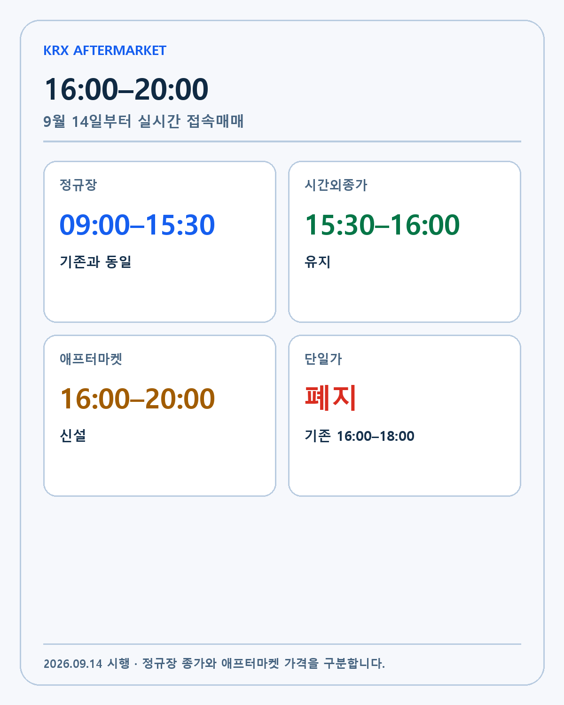
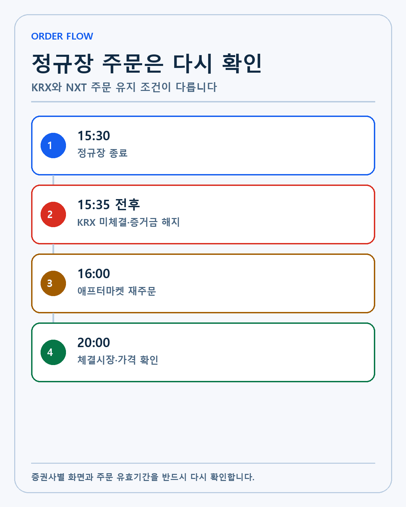
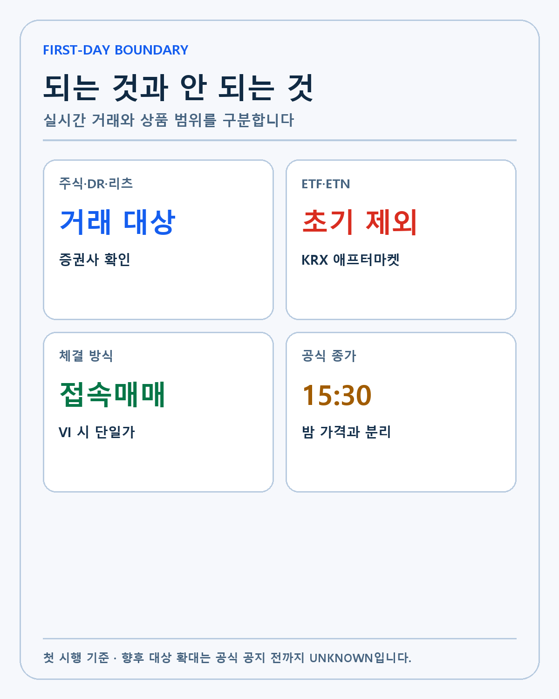
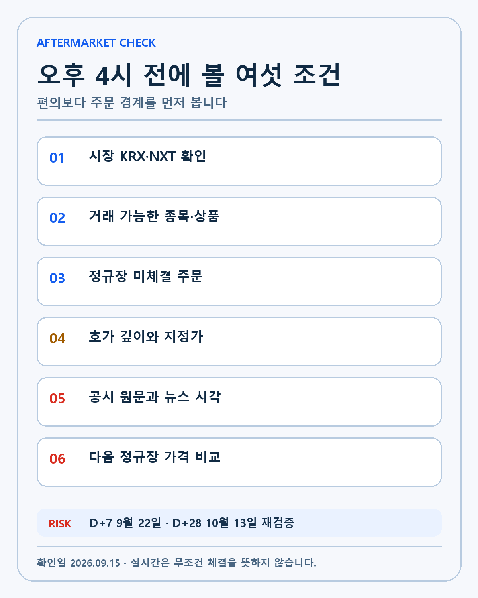

KRX AFTERMARKET · DEEP RESEARCH
KRX 애프터마켓 심층 분석: 오후 4~8시 실시간 거래가 주문·종가·유동성에 미치는 변화
KRX 애프터마켓 첫 시행을 거래시간·미체결 주문·ETF 제외·NXT 라우팅·스프레드와 다음 정규장 가격으로 분석합니다.
2026년 9월 14일 시작된 KRX 애프터마켓의 거래시간과 주문·종가·ETF·NXT 관련 주의점은 무엇인가? 이 리서치는 같은 주제의 네이버 글을 늘여 쓴 문서가 아니라 제도 또는 기술의 작동 원리, 반대 논리, 무효화 조건과 투자자의 행동 순서를 별도로 검증합니다. 작성·검증 기준일은 2026-09-15입니다.
무엇이 9월 14일부터 바뀌었나

확인된 출발점은 다음과 같습니다. 금융위원회의 자본시장 인프라 점검 자료는 한국거래소가 9월 14일 오후 4시부터 8시까지 애프터마켓을 신설한다고 밝혔습니다. 기존 오후 4~6시 시간외단일가 매매는 폐지됐습니다.
숫자를 투자 판단으로 옮기려면 한 단계가 더 필요합니다. 10분마다 주문을 모아 한 가격에 체결하던 방식에서 매수·매도 호가가 맞으면 바로 체결되는 접속매매로 바뀌었습니다. 단순히 종료 시각이 두 시간 늘어난 것보다 체결 방식이 달라졌다는 점이 더 큽니다. 이 변화가 편의나 기술 시연을 넘어 경제적 가치가 되려면 다음 단계의 증거가 필요합니다.
반대 방향의 설명도 함께 남겨야 합니다. 오후 8시까지 거래할 수 있다고 해서 정규장이 그대로 연장된 것은 아닙니다. 오후 3시30분 종가, 장후 시간외종가, 애프터마켓은 역할이 다릅니다. 한 방향의 장점만 남기면 가격 움직임을 설명하기는 쉬워도 투자 가설을 검증하기는 어려워집니다.
현재 공개 자료만으로 답할 수 없는 부분도 있습니다. 첫날 이후 거래대금이 어느 종목에 얼마나 고르게 분산될지, 개인투자자의 실제 체감 유동성이 얼마나 개선될지는 아직 데이터가 부족합니다. 이 항목은 회사·거래소·규제기관의 후속 자료가 나오기 전까지 UNKNOWN으로 둡니다.
실제 행동은 다음 검증 순서로 제한합니다. 주문 화면에서 세션 이름과 거래소, 예상 체결가를 확인한 뒤 주문합니다. 이후 결과가 사전 조건과 다르면 기존 판단을 고칩니다.
거래시간을 세 구간으로 나눕니다
확인된 출발점은 다음과 같습니다. 정규장은 오전 9시부터 오후 3시30분까지 그대로입니다. 장후 시간외종가 매매는 오후 3시30분부터 4시까지 유지되고 KRX 애프터마켓은 오후 4시부터 8시까지 운영됩니다.
숫자를 투자 판단으로 옮기려면 한 단계가 더 필요합니다. 같은 날 같은 종목을 거래해도 어느 구간에서 주문했는지에 따라 가격 형성과 체결 방식이 달라집니다. 정규장 종가를 기준으로 포트폴리오를 기록하는 사람은 애프터마켓 가격을 공식 종가처럼 섞지 않아야 합니다. 이 변화가 편의나 기술 시연을 넘어 경제적 가치가 되려면 다음 단계의 증거가 필요합니다.
반대 방향의 설명도 함께 남겨야 합니다. 미국 시장처럼 정규장 전후 세션이 길어졌다는 비유는 이해에 도움이 되지만 거래 대상, 가격 제한, 주문 유지와 증권사 라우팅은 한국 제도에 따릅니다. 한 방향의 장점만 남기면 가격 움직임을 설명하기는 쉬워도 투자 가설을 검증하기는 어려워집니다.
현재 공개 자료만으로 답할 수 없는 부분도 있습니다. 증권사별 주문 접수 마감과 화면 표시는 조금씩 다를 수 있습니다. 이 항목은 회사·거래소·규제기관의 후속 자료가 나오기 전까지 UNKNOWN으로 둡니다.
실제 행동은 다음 검증 순서로 제한합니다. 15시30분 종가와 20시 애프터마켓 마지막 체결가를 따로 기록합니다. 이후 결과가 사전 조건과 다르면 기존 판단을 고칩니다.
정규장 미체결 주문은 자동 승계되지 않습니다

확인된 출발점은 다음과 같습니다. 삼성증권의 주문·ETF·NXT 변경 안내는 KRX 정규장에 낸 미체결 주문의 증거금이 정규장 종료 뒤 해지되고 애프터마켓 참여를 위해 다시 호가를 내야 한다고 안내합니다.
숫자를 투자 판단으로 옮기려면 한 단계가 더 필요합니다. 낮에 낸 지정가 주문이 밤 8시까지 자동으로 살아 있다고 생각하면 주문 기회를 놓칠 수 있습니다. 반대로 주문이 사라진 것을 보고 중복 주문하면 의도보다 많은 수량이 체결될 위험도 있습니다. 이 변화가 편의나 기술 시연을 넘어 경제적 가치가 되려면 다음 단계의 증거가 필요합니다.
반대 방향의 설명도 함께 남겨야 합니다. NXT 주문은 조건과 증권사 지원 방식에 따라 애프터마켓까지 유지될 수 있습니다. KRX와 NXT를 같은 주문장처럼 보지 않아야 합니다. 한 방향의 장점만 남기면 가격 움직임을 설명하기는 쉬워도 투자 가설을 검증하기는 어려워집니다.
현재 공개 자료만으로 답할 수 없는 부분도 있습니다. 모든 증권사가 같은 주문 유형과 유효기간 옵션을 제공하는지는 확인이 필요합니다. 이 항목은 회사·거래소·규제기관의 후속 자료가 나오기 전까지 UNKNOWN으로 둡니다.
실제 행동은 다음 검증 순서로 제한합니다. 정규장 종료 뒤 미체결·증거금 상태를 다시 읽고 필요한 수량만 재주문합니다. 이후 결과가 사전 조건과 다르면 기존 판단을 고칩니다.
ETF와 ETN은 첫 시행 대상이 아닙니다

확인된 출발점은 다음과 같습니다. KB증권의 KRX 애프터마켓 안내와 삼성증권 안내는 주권·외국주권·DR·리츠 등 거래 대상을 설명하면서 ETF와 ETN은 초기 KRX 애프터마켓 대상에서 제외된다고 밝힙니다.
숫자를 투자 판단으로 옮기려면 한 단계가 더 필요합니다. 국내 개별주식 거래시간이 늘었다고 해서 지수 ETF와 레버리지·인버스 상품까지 같은 시간에 거래되는 것은 아닙니다. 상품별 세션을 확인해야 합니다. 이 변화가 편의나 기술 시연을 넘어 경제적 가치가 되려면 다음 단계의 증거가 필요합니다.
반대 방향의 설명도 함께 남겨야 합니다. NXT의 거래 가능 종목과 KRX 대상은 일치하지 않을 수 있고 향후 제도 변경도 가능합니다. 한 방향의 장점만 남기면 가격 움직임을 설명하기는 쉬워도 투자 가설을 검증하기는 어려워집니다.
현재 공개 자료만으로 답할 수 없는 부분도 있습니다. 대상 상품 확대 시점은 현재 확정된 것으로 쓰지 않습니다. 이 항목은 회사·거래소·규제기관의 후속 자료가 나오기 전까지 UNKNOWN으로 둡니다.
실제 행동은 다음 검증 순서로 제한합니다. 주문 버튼이 보이는지만 보지 말고 거래소·세션·대상 종목 여부를 확인합니다. 이후 결과가 사전 조건과 다르면 기존 판단을 고칩니다.
두 거래소가 동시에 열릴 때 최선집행이 작동합니다
확인된 출발점은 다음과 같습니다. 오후 4~8시에는 KRX와 NXT가 함께 운영될 수 있습니다. 증권사는 가격, 비용, 체결 가능성과 속도 등을 고려하는 최선집행기준에 따라 주문을 배분합니다.
숫자를 투자 판단으로 옮기려면 한 단계가 더 필요합니다. 화면에 보이는 한 가격만 보고 실제 체결 시장을 추측해서는 안 됩니다. 같은 종목이라도 거래소별 호가 깊이와 체결량이 다를 수 있습니다. 이 변화가 편의나 기술 시연을 넘어 경제적 가치가 되려면 다음 단계의 증거가 필요합니다.
반대 방향의 설명도 함께 남겨야 합니다. 스마트 주문 라우팅이 항상 투자자에게 가장 좋은 사후 결과를 보장하는 것은 아닙니다. 급변장에서는 호가가 이동하고 일부 수량만 체결될 수 있습니다. 한 방향의 장점만 남기면 가격 움직임을 설명하기는 쉬워도 투자 가설을 검증하기는 어려워집니다.
현재 공개 자료만으로 답할 수 없는 부분도 있습니다. 증권사별 최선집행기준과 사용자가 직접 시장을 고를 수 있는 범위는 앱마다 다릅니다. 이 항목은 회사·거래소·규제기관의 후속 자료가 나오기 전까지 UNKNOWN으로 둡니다.
실제 행동은 다음 검증 순서로 제한합니다. 체결 내역에서 KRX·NXT 시장과 체결 가격, 수수료를 확인합니다. 이후 결과가 사전 조건과 다르면 기존 판단을 고칩니다.
실시간 거래도 유동성 위험은 남습니다
확인된 출발점은 다음과 같습니다. 애프터마켓은 접속매매지만 정규장보다 참여자가 적고 호가 간격이 넓을 수 있습니다. VI가 발동하면 일정 시간 단일가 방식으로 전환될 수 있습니다.
숫자를 투자 판단으로 옮기려면 한 단계가 더 필요합니다. 실시간이라는 말은 언제든 원하는 가격에 충분한 수량을 거래할 수 있다는 뜻이 아닙니다. 시장가 주문은 얕은 호가를 연속으로 소화해 예상보다 불리한 가격에 체결될 수 있습니다. 이 변화가 편의나 기술 시연을 넘어 경제적 가치가 되려면 다음 단계의 증거가 필요합니다.
반대 방향의 설명도 함께 남겨야 합니다. 기업 공시나 해외시장 움직임을 정규장 다음 날까지 기다리지 않고 반영할 수 있다는 장점은 분명합니다. 한 방향의 장점만 남기면 가격 움직임을 설명하기는 쉬워도 투자 가설을 검증하기는 어려워집니다.
현재 공개 자료만으로 답할 수 없는 부분도 있습니다. 종목별 평균 스프레드와 정규장 대비 가격발견 효율은 누적 데이터가 쌓여야 판단할 수 있습니다. 이 항목은 회사·거래소·규제기관의 후속 자료가 나오기 전까지 UNKNOWN으로 둡니다.
실제 행동은 다음 검증 순서로 제한합니다. 첫 시행기에는 시장가보다 가격과 수량을 제한한 주문을 우선 검토합니다. 이후 결과가 사전 조건과 다르면 기존 판단을 고칩니다.
제가 확인할 여섯 조건

확인된 출발점은 다음과 같습니다. 거래시간 확대는 투자 기회를 늘리지만 좋은 기업을 고르는 기준을 바꾸지는 않습니다.
숫자를 투자 판단으로 옮기려면 한 단계가 더 필요합니다. 퇴근 뒤 주문할 수 있다는 편의와 매수해야 할 이유는 별개입니다. 기술, 해자, 경영진, 성장률과 현금흐름을 확인한 뒤 가격을 봅니다. 이 변화가 편의나 기술 시연을 넘어 경제적 가치가 되려면 다음 단계의 증거가 필요합니다.
반대 방향의 설명도 함께 남겨야 합니다. 뉴스가 나온 직후 애프터마켓 가격이 크게 움직여도 다음 정규장의 기관·외국인 수급과 다른 방향일 수 있습니다. 한 방향의 장점만 남기면 가격 움직임을 설명하기는 쉬워도 투자 가설을 검증하기는 어려워집니다.
현재 공개 자료만으로 답할 수 없는 부분도 있습니다. 첫 주의 높은 관심이 장기 유동성으로 남을지는 아직 모릅니다. 이 항목은 회사·거래소·규제기관의 후속 자료가 나오기 전까지 UNKNOWN으로 둡니다.
실제 행동은 다음 검증 순서로 제한합니다. 시장·세션, 대상 종목, 미체결 주문, 호가 깊이, 공시 원문, 다음 정규장까지 여섯 항목을 확인합니다. 이후 결과가 사전 조건과 다르면 기존 판단을 고칩니다.
시나리오
강세 시나리오는 제도나 기술이 실제 사용량·고객·유동성과 현금흐름으로 연결되는 경우입니다. 기준 시나리오는 방향은 맞지만 사용과 상업화가 예상보다 천천히 진행되는 경우입니다. 약세 시나리오는 큰 발표가 반복돼도 핵심 성능·체결·계약과 경제성이 확인되지 않는 경우입니다.
무효화 조건
첫째, 공식 자료와 실제 운영 결과가 다르면 가설을 수정합니다. 둘째, 사용량이나 기술 지표가 늘어도 비용·손실·스프레드가 더 빠르게 악화하면 긍정적으로 해석하지 않습니다. 셋째, 후속 데이터가 없는 상태에서 가격만 움직이면 새로운 FACT가 아니라 시장 반응으로만 기록합니다. 넷째, 다른 시장이나 경쟁 기술이 더 낮은 비용과 높은 신뢰로 같은 문제를 해결하면 해자 가정을 낮춥니다. 다섯째, 다음 확인일에도 검증 가능한 업데이트가 없으면 우선순위를 낮춥니다.
비교표
| 구간 | 시간 | 주문 경계 |
|---|---|---|
| 정규장 | 09:00~15:30 | 종가 형성 |
| 시간외종가 | 15:30~16:00 | 종가 기준 거래 |
| KRX 애프터마켓 | 16:00~20:00 | 접속매매, 재주문 확인 |
검증 체크리스트
- 실제 주문 시장과 거래 대상을 확인합니다.
- 미체결 주문·증거금·호가 깊이를 확인합니다.
- 공시 원문과 다음 정규장 가격을 비교합니다.
작성자의 판단
저는 기술과 제도가 삶의 선택지를 넓히는 방향을 좋아하지만 새로움 자체를 투자 근거로 쓰지 않습니다. 기술, 해자, 운영 주체와 경영진, 성장률, 현금흐름의 순서로 확인합니다. 이 순서를 통과하지 못한 기대는 가격이 오르더라도 관찰 목록에 둡니다.
D+7인 2026년 9월 22일과 D+28인 2026년 10월 13일에 실제 데이터와 후속 공시를 다시 확인합니다. 이 글은 개인 리서치이며 특정 종목이나 금융상품의 매수·매도를 권유하지 않습니다.
첫 주에 측정할 시장 품질
애프터마켓의 성패를 거래 가능 시간만으로 판단하기는 어렵습니다. 첫째로 종목별 거래대금과 체결 건수를 정규장 대비 비율로 봐야 합니다. 거래대금이 소수 대형주에만 몰리면 전 종목 거래가 가능하다는 제도적 장점과 실제 유동성 사이에 간격이 남습니다. 둘째로 매수 1호가와 매도 1호가의 차이, 주문 수량을 소화할 수 있는 호가 깊이를 확인해야 합니다. 체결 건수가 늘어도 스프레드가 넓으면 투자자의 실제 거래비용은 높을 수 있습니다.
셋째는 오후 8시 마지막 체결가와 다음 정규장 시가의 차이입니다. 애프터마켓이 새 정보를 안정적으로 반영한다면 다음 날 가격과의 괴리가 줄어야 합니다. 반대로 얕은 호가에서 만든 급등락이 정규장 시작과 함께 되돌려진다면 가격발견 기능보다 단기 변동성이 컸다고 볼 수 있습니다. 지수·대형주·중소형주를 같은 평균으로 묶지 않고 따로 기록하겠습니다.
증권사 주문 라우팅을 확인하는 이유
오후 4시부터 KRX와 NXT가 동시에 열리면 투자자가 본 가격과 실제 체결 시장이 다를 수 있습니다. 증권사의 최선집행기준은 가격뿐 아니라 수수료, 체결 가능성, 속도와 주문 규모를 고려합니다. 따라서 체결 뒤에는 시장 이름, 주문 유형, 일부 체결 여부와 남은 수량을 확인해야 합니다. 같은 종목의 두 시장 호가를 볼 수 있는 화면이 제공되는지, 사용자가 직접 시장을 고를 수 있는지도 증권사별로 비교할 필요가 있습니다.
정규장 미체결 주문의 처리도 중요합니다. KRX 주문은 정규장 종료 뒤 증거금이 해지되고 애프터마켓 참여를 위해 다시 내야 할 수 있지만 NXT 주문은 조건에 따라 유지될 수 있습니다. 이 차이는 주문 기회를 놓치는 문제뿐 아니라 같은 수량을 두 번 내는 위험과 연결됩니다. 첫 주에는 자동 주문보다 미체결 내역과 주문 유효기간을 직접 읽는 편이 안전합니다.
D+7과 D+28 복기 기준
9월 22일에는 거래대금, 스프레드, 다음 정규장과의 가격 괴리, 증권사 화면의 주문 경계를 확인합니다. 10월 13일에는 초기 관심이 줄어든 뒤에도 유동성이 남았는지, 특정 종목군에만 거래가 집중됐는지 다시 봅니다. ETF·ETN 등 대상 상품 확대와 제도 변경은 공식 공지 전까지 UNKNOWN으로 둡니다.
애프터마켓이 편리하다는 사실과 더 자주 거래해야 한다는 결론은 다릅니다. 거래시간이 늘수록 기업을 분석할 시간도 늘어난다는 방향으로 사용하겠습니다. 공시 원문과 가격 한도를 먼저 정하고, 조건을 충족하지 못하면 밤 8시까지 열려 있어도 주문하지 않습니다.
작성 방법
2026년 9월 15일 기준 공식 자료와 공시를 우선하고 사실·회사 전망·시나리오·UNKNOWN을 분리했습니다.
개인 투자 기록이며 특정 종목의 매수·매도를 권유하지 않습니다.